CINTA & NAFSU
Seorang Aquarius dengan pacar - Anda sangat mandiri dan suka mengejar proyek pribadi, tapi 2018 adalah tahun untuk berbagi lebih banyak dengan pasangan Anda. Jadi, lakukan yang terbaik untuk menemukan olahraga, hobi dan aktivitas santai yang sama-sama Anda nikmati. Juga meletakan beberapa malam tanggal biasa ke dalam jadwal sibuk Anda. Jika Anda lajang, panah Cupid kemungkinan besar akan menyerang pada bulan Januari, Februari atau Juli, saat Gerhana Matahari dan Langit merangsang zona hubungan Anda. Harapkan percikan romantis untuk terbang dengan Aries yang asmara, Leo yang lincah atau seorang Sagittarius seksi.
UANG & NASIB
Seorang Aquarius ada wirausahawan alami dan, dengan Jupiter yang beruntung yang mengaktifkan zona karir Anda, inilah saat yang tepat untuk memulai usaha profesional baru yang menarik. Jadi ini adalah tahun yang indah untuk mencari pekerjaan, menabrak atasan Anda untuk kenaikan gaji, mengajukan pinjaman bisnis, memperluas panggilan Anda saat ini, membeli pesaing yang sedang berjuang; atau hidupkan gaya hidup laptop dengan memulai bisnis online. Jika uang ekstra datang dengan cara Anda, jangan terlalu impulsif dan picik! Pastikan Anda mengamankannya dengan bijak, dengan memperhatikan kebutuhan masa depan Anda.
GAYA HIDUP
Banyak orang Aquarius sedikit jiwa yang gelisah dan tak terduga. Tapi Anda akan mulai merasa lebih mental dan fisik menetap di tahun 2018, karena Uranus (planet pelindung Anda) memulai tinggal tujuh tahun melalui pertanda stabil dan masuk akal Taurus. Anda pasti perlu ekstra hati-hati dengan korespondensi, kontrak, komputer, telepon dan perjalanan dari tanggal 23 Maret sampai 15 April, ketika Merkuri yang secara mundur mengacak antena komunikasi Anda. Kesabaran ekstra dan harus hati hati sangat penting selama periode ini.
ORANG AQUARIUS TERKENAL
Michael Jordan, Bob Marley, Indah Dewi Pertiwi.
MOTTO TAHUN BARU
"Beberapa orang menginginkan hal itu terjadi, beberapa berharap hal itu akan terjadi, yang lain mewujudkannya." (Michael Jordan)
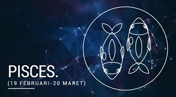
Pisces 20 Februari - 20 Maret
PISCES
Pisces 20 Februari - 20 Maret 2018
CINTA & NAFSU
Seorang Pisces dengan pacar - kemitraan Anda macet di awal tahun. Tapi bertahanlah di sana karena sentuhan rempah-rempah fantasi menumbuhkan cintamu di bulan Mei dan Agustus, saat imajinasimu mengamuk. Dan Gerhana Bulan pada bulan Juli menjanjikan sebuah perayaan romantis melalui ulang tahun, ulang tahun, pertunangan atau pernikahan. Ikan Tunggal - mulai 10 Februari sampai 6 Maret, Anda berada di tempat yang paling karismatik, karena pesona planet Venus bergerak melalui tanda Anda. Jadi inilah saat yang tepat untuk mencari jodoh anda. Tempat terbaik untuk melihat adalah acara seni terkait (seperti konser dan festival) juga online.
UANG & NASIB
Keberuntungan, perjalanan dan pendidikan terkait pada 2018. Antara sekarang dan 8 November, keberuntungan berasal dari pendidikan, penerbitan, impor, ekspor, perjalanan, teman asing atau bisnis luar negeri. Ini juga merupakan ide bagus untuk mengeluarkan uang untuk pelatihan lebih lanjut, karena Anda meningkatkan keterampilan kerja Anda. Anda juga bisa memperluas pilihan Anda dengan mempelajari bahasa lain. Kemudian Jupiter masuk ke zona karir Anda, jadi Anda dapat berharap banyak peluang profesional yang akan Anda dapatkan pada akhir 2018.
GAYA HIDUP
Pada bulan Mei, tonjolan Jupiter-Neptunus membawa keberuntungan, meningkatkan imajinasi, meningkatkan pengembaraan, dan menyoroti sisi kreatif dan spiritual Anda. Jadi inilah saat yang tepat untuk bepergian, atau mengambil mimpi istemewa dan memintanya menjadi kenyataan yang benar. Dengan Saturnus, Pluto dan Mars yang secara mundur semua merangsang zona sehabat Anda, apakah tahun 2018 akhirnya memutuskan hubungan dengan teman cuaca yang adil? Buatlah prioritas untuk mengisi kelompok persahabatan Anda dengan orang-orang positif yang meningkatkan kepercayaan diri Anda, dorong bakat Anda dan dukung impian Anda.
>ORANG PISCES TERKENAL
Albert Einstein, Nirina Zubir, Raline Shah.
MOTTO TAHUN BARU
"Imajinasi adalah segalanya. Ini adalah pandangan atraksi yang akan datang dari kehidupan." (Albert Einstein)
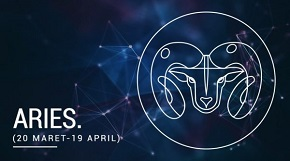
Aries 21 Maret - 20 April
ARIES
Aries 21 Maret - 20 April 2018
CINTA & NAFSU
Harapkan beberapa tantangan hubungan pada tahun 2018, karena empat gerhana dan Venus yang secara mundur membangkitkan romantisme dan zona pertemanan Anda. Hal-hal bisa datang ke kepala pada bulan Juli atau Agustus, ketika Anda akhirnya kehilangan kesabaran dengan teman palsu atau kekasih yang tidak dapat diandalkan. Single - Anda mungkin harus mencium beberapa katak sebelum Anda menemukan Pangeran (atau Putri) Anda Tampan. Tapi jangan menyerah - setiap kekecewaan berkencan akan membawa Anda lebih dekat dengan jodoh Anda.Eorang Aries yang Melekat - Januari dan April adalah bulan-bulan utama untuk merencanakan liburan akhir pekan yang erotis dengan kekasih Anda, saat Jupiter dan Pluto meningkatkan dorongan seks dan nafsu untuk hidup Anda.
UANG & NASIB
Jupiter yang beruntung bergerak melalui zona 'uang dari orang lain' Anda (sampai 8 November) sehingga Anda bisa mendapatkan keuntungan dari bantuan, hadiah cuma-cuma, kenaikan gaji, warisan, hadiah, pengembalian pajak bagus, penyelesaian perceraian atau pembayaran superannuation. Pastikan Anda mengelola rejeki nomplok dengan bijak, dengan maksud untuk keamanan finansial jangka panjang. Kemudian, dari tanggal November 9 sampai 31 Desember, ada uang yang harus dilakukan melalui penerbitan, pendidikan, perjalanan, perjalanan bisnis, kontak internasional, impor atau ekspor.
GAYA HIDUP
Merasa resah? Februari dan Desember ada bulan terbaik untuk bepergian, selama Anda merencanakan perjalanan dengan hati-hati. Tujuan terbaik Lingkungan alam yang indah dengan aktivitas menantang yang membuat adrenalin Anda berjalan. Sifat seorang Aries yang sembrono mengintip dari tanggal 26 Juni sampai 27 Agustus, ketika penguasa Mars Anda retrograde, dan energi dan waktu Anda berada di tempat (terutama di tempat kerja). Bertujuan untuk bersikap wajar dan bertanggung jawab - bukan impulsif dan tidak mungkin!
>ORANG ARIES TERKENAL
Sarah Jessica Parker, Meriam Bellina, Farah Quinn.
MOTTO TAHUN BARU
"Anda ada hari baik dan hari buruk. Itu pernikahan. Itu hubungan. Itu pertemanan." (Sarah Jessica Parker)
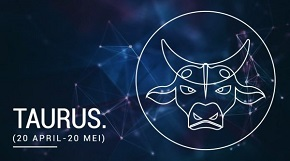
Taurus 21 April - 21 Mei
TAURUS
Taurus 21 April - 21 Mei 2018
CINTA & NAFSU
Pada tahun 2018, Anda akan mengalami siklus cinta paling beruntung selama 12 tahun terakhir, karena kekuatan Jupiter (planet keberuntungan) melewati zona kemitraan Anda. Jadi, ini adalah saat yang tepat untuk berlibur istimewa bersama pasangan Anda atau memulai romansa baru yang panas dengan orang asing seksi, karena cinta dan perjalanan terhubung. Ada satu patch rumit untuk dinavigasi sekalipun! Venus yang secara mundur mengaitkan hubungan kapal (dari 5 Oktober sampai 16 November) ketika akan membawa keterampilan diplomatik substansial Anda untuk mendapatkan kembali sesuatu yang sejuk.
UANG & NASIB
Cinta, persahabatan, keberuntungan, perjalanan dan bisnis semuanya terkait sehingga 2018 adalah tahun yang menguntungkan untuk memulai (dan mempromosikan) usaha bersama yang menjanjikan. Apalagi dengan rekan bisnis dari negara lain atau budaya. Dari 5 Oktober sampai 16 November, hindari membuat keputusan penting, karena Venus (planet yang memerintah Anda) membalikkan meskipun wilayah kerja dan hubungan Anda. Periode dari Desember 7-31 ada waktu yang tepat untuk mengumpulkan sumber daya dengan orang-orang tercinta untuk mendapatkan hasil yang bermanfaat.
GAYA HIDUP
Uranus - planet gangguan dan inovasi - bergerak melalui tanda Anda dari tanggal 15 Mei sampai 6 November. Dan Uranus belum berada di Taurus sejak 1942! Jadi, saatnya bagi orang Taurus yang bosan untuk melompat keluar dari zona nyaman Anda dan menggoncangkan dunia Anda. Bereksperimen dan jelajahi, saat Anda melakukan sesuatu yang sangat berbeda atau melakukan petualangan besar. Jika Anda terlalu mengakar dalam gaya hidup lama Anda dan jangan membuat beberapa perubahan secara sukarela, maka Uranus akan membangkitkan segalanya untuk Anda dengan melemparkan bola melengkung ke arah Anda.
ORANG TAURUS TERKENAL
Cate Blanchett, George Clooney, Widy Vierratale.
MOTTO TAHUN BARU
"Penting untuk melakukan perjalanan dan mengeksplorasi dan berpengalaman serangkaian yang terus-menerus." (Cate Blanchett)
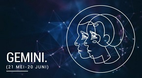
Gemini 22 Mei - 22 Juni
GEMINI
Gemini 22 Mei - 22 Juni 2018
CINTA & NAFSU
Seorang Gemini yang melekat - Februari ada bulan yang luar biasa untuk membawa lebih banyak asmara, fantasi dan kesenangan ke dalam hubungan Anda. Jika Anda lajang, bulan terbaik untuk mencari cinta (atau bergabung dengan situs kencan online) ada bulan Februari, ketika kekuatan Mars proaktif melalui zona kemitraan Anda. Dan jangan malu mempromosikan kualitas positif Anda. Jika Anda tidak mencintai dan menghargai diri sendiri, mengapa harus orang lain? Planet Cinta Venus membalikkan melalui zona asmara Anda dari tanggal 31 Oktober - 16 November. Jadi, bukan saat yang tepat untuk kencan pertama, mengajukan, menikah atau memperbarui janji pernikahan Anda.
UANG & NASIB
Jupiter yang beruntung bergerak melalui zona kesehatan Anda sampai 8 November, yang merupakan kabar baik untuk vitalitas fisik dan kesejahteraan mental selama tahun depan. Tapi, dengan Saturnus selalu hati hati dengan Uang dan Mars secara mundur di zona 'uang dari orang lain' Anda, mengharapkan pembayaran tertunda, masalah pajak, berkurangnya arus kas atau pukulan anggaran. Memisahkan keinginan Anda dari kebutuhan Anda ada suatu keharusan pada tahun 2018 karena si Kembar cerdas mendapat penghematan, mengurangi konsumsi, dan belajar untuk mendapatkan dengan lebih sedikit.
GAYA HIDUP
Februari ada bulan yang fantastis untuk perjalanan, saat planet-planet membuka jalan untuk perjalanan yang menyenangkan dan tanpa kerumitan. Tanggal berikut adalah ketika penguasa Mercury Anda mundur - 23 Maret sampai 15 April terlihat rumit untuk pertemanan dan jejaring sosial. Harapkan kekacauan komunikasi, komputer, perjalanan atau mobil dari tanggal 26 Juli sampai 19 Agustus. Dan Anda harus ekstra hati-hati dan dengan rekan kerja dan orang yang dicintai mulai 17 November sampai 6 Desember. Hal terbaik yang harus dilakukan saat Merkuri secara mundur? Tinjau, penelitian dan mulai lagi.
ORANG GEMINI TERKENAL
Nicole Kidman, Johnny Depp, Titi DJ.
MOTTO TAHUN BARU
Hidup telah membuat semua liku-liku itu. Anda harus terus berpegangan dan pergi." (Nicole Kidman)
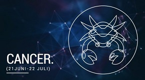
Cancer 22 Juni - 22 Juli
CANCER
Cancer 22 Juni - 22 Juli 2018
CINTA & NAFSU
Dengan Saturnus di zona hubungan Anda di tahun 2018, banyak Kepiting (yaitu orang Cancer) akan terjun melalui pertunangan, pernikahan, pindah bersama, atau dengan menjadi orang tua, karena Anda berusaha untuk mendapatkan keabadian yang lebih dalam dalam kemitraan utama Anda. Dengan kerja keras dan komitmen, kehidupan cinta Anda perlahan akan beralih semakin kuat. Single - bulan terbaik untuk bertemu dengan jodoh Anda adalah pada bulan Januari, Mei dan September, ketika karisma Cancerian Anda menarik pengagum dari dekat dan jauh. Tapi mengharapkan kekeringan kencan sementara pada bulan Agustus dan Oktober, saat Mars dan Venus membalikkan zona asmara Anda.
UANG & NASIB
Gerhana Matahari pada bulan Februari bagus untuk usaha bisnis bersama dan mengubah ide inovatif menjadi usaha kewirausahaan yang menarik. Bulan-bulan terbaik untuk membeli tiket lotre, memasuki kompetisi atau memukul kasino pada bulan Maret dan Juni, saat Jupiter mengirimkan keberuntungan ke arah Anda. Tapi jangan kemudian menyia-nyiakan keuntungan yang Anda dapatkan menyimpan uang ekstra untuk mengimbangi Anda kapan waktu yang ketat. Pada bulan Oktober, jika sebuah proyek keuangan terlihat terlalu bagus untuk menjadi kenyataan maka pergilah - dengan cepat!
GAYA HIDUP
Januari sampai 8 November sangat menakjubkan untuk menumbuhkan persahabatan, saat Anda memperpanjang kelompok sebaya Anda untuk menyertakan kerumunan baru yang berjiwa petualang. Kehidupan keluarga Anda juga sangat penting di tahun 2018. Beberapa Kepiting (Orang Cancer) akan menyambut bayi baru atau menikmati hubungan baik dengan anak, remaja atau orang tua saat Anda berbagi hobi, olahraga, dan minat bersama. Anda juga akan merasa lebih bermurah hati terhadap kerabat yang bandel, dan bahkan mungkin menemukannya di hati Anda untuk memaafkan dan melupakan ketidaksopanan masa lalu mereka
ORANG CANCER TERKENAL
Meryl Streep, Selena Gomez, Agnez Mo.
MOTTO TAHUN BARU
"Keluargaku benar-benar datang dulu. Selalu selalu dan selalu." (Meryl Streep)
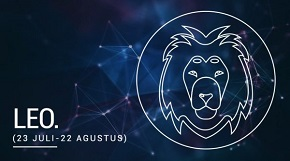
Leo 23 Juli - 21 Agustus
LEO
Leo 23 Juli - 21 Agustus 2018
CINTA & NAFSU
Orang Leo dengan pacar - pada bulan Januari, Februari, Juli dan Agustus, empat gerhana memaksa Anda untuk melihat hubungan Anda dengan baik. Apakah pasangan Anda melakukan semua pemberian, saat Anda melakukan semua tindakan? Apakah Anda terus-menerus berbicara, sementara mereka hanya mendengarkan? Kompromi dan komunikasi dua arah adalah kunci harmoni romantis pada tahun 2018. Kucing Tunggal - panah Cupid kemungkinan besar akan menyerang pada bulan Februari, saat Gerhana Matahari memberi energi pada zona cinta Anda. Jadi, sikatlah teknik menggoda Anda dan menggoda satu garis. Tapi hindari jatuh untuk pemimpi yang meragukan atau penipu seksi.
UANG & NASIB
Kemakmuran planet Jupiter sedang mengunjungi zona domestik Anda. Jadi periode antara sekarang dan 8 November ada waktu terbaik untuk mendekorasi ulang, merenovasi, membangun ekstensi, menjual properti, membeli rumah baru atau real estat lainnya, rumah duduk, pindah atau memulai bisnis rumahan. Untung juga bisa datang melalui orang yang dicintai, teman keluarga atau keluarga jauh. Hari paling beruntung tahun ini adalah tanggal 26 November jadi rencanakan sesuatu yang istimewa.
GAYA HIDUP
Kucing adalah makhluk ambisius, dan 2018 ada tahun ketika Anda benar-benar dapat berdiri keluar dari keramaian dan membuat kesan kuat di ranah publik. Dengan Uranus yang unik menghidupkan kembali zona karir dan reputasi Anda (mulai tanggal 15 Mei-6 November) semakin otentik Anda mengekspresikan bakat dan kreativitas Anda, semakin sukses Anda nantinya. Tapi ingat ada garis tipis antara meniup yang lain (dengan energi dan antusiasme Anda) dan mengubahnya dengan pendekatan tumpul Anda (dan terkadang sembong).
ORANG LEO TERKENAL
Madonna, Jennifer Lawrence, Tantri Kotak.
MOTTO TAHUN BARU
"Jika saya tidak bisa berani dalam pekerjaan saya dan cara menjalani hidup saya, maka saya tidak benar-benar mengerti maksudnya berada di planet ini." (Madonna)
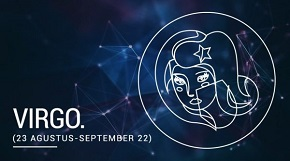
Virgo 22 Agustus - 23 September
VIRGO
Virgo 22 Agustus - 23 September 2018
CINTA & NAFSU
Seorang Virgo sudah dengan pacar - 2018 ada tahun untuk membawa lebih banyak roman dan fantasi ke dalam hubungan Anda, dan bulan Maret ada bulan perdana untuk membumbui kehidupan seks Anda dengan beberapa gerakan baru yang mengejutkan. Jika Anda lajang, berhentilah mencari pasangan 'sempurna'. Sebagai gantinya, carilah cinta dengan manusia biasa ... seseorang dengan kekurangan manusia biasa (seperti Taurus yang keras kepala atau seorang Capricorn yang mengendalikan). Dengan Jupiter dan Pluto yang merangsang zona cinta Anda, Januari, April dan Mei adalah bulan yang luar biasa untuk bergabung dengan situs kencan online, jatuh cinta, mengusulkan, menikah atau memperbarui janji pernikahan Anda.
UANG & NASIB
Kemakmuran planet Jupiter bergerak melalui zona jejaring sosial Anda sampai 8 November. Jadi Anda bisa memukul jackpot internet saat sesuatu yang Anda posting (atau jual) online berjalan dengan viral. Beberapa orang Virgo yang bisa mengerti uang juga bisa mendongkrak arus kas melalui menulis, mengajar, Podcasting atau berbicara di depan umum. Atas dasar Venus yang retrograde, situasi keuangan Anda nampaknya akan mundur dalam dua minggu pertama bulan November. Tapi (dengan banyak kesabaran dan ketekunan) segalanya akan segera kembali ke jalur semula.
GAYA HIDUP
Dengan empat gerhana yang menembaki zona kemanusiaan Anda di tahun 2018, Anda akan merasakan kebutuhan untuk melayani orang lain melalui proyek relawan khusus baik di luar negeri maupun di dalam komunitas lokal Anda. Anda punya begitu banyak bakat Virgo serbaguna untuk ditawarkan. Dan, dengan Jupiter dan Uranus keduanya memperbaiki zona perjalanan Anda, sudah pasti saatnya untuk lebih berjiwa petualang. Tapi hindari menandatangani kontrak antara tanggal 23 dan 15 Maret, ketika Merkuri (planet penguasa Anda) membalikkan zona pendapatan dan bisnis Anda.
ORANG VIRGO TERKENAL
Ibu Teresa, Beyonce Knowles, Indah Kalalo.
MOTTO TAHUN BARU
"Anda harus mengembalikannya. Anda tidak bisa hanya duduk di sana." (Pangeran Harry)
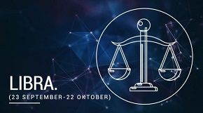
Libra 24 September - 23 Oktober
LIBRA
Libra 24 September - 23 Oktober 2018
CINTA & NAFSU
Seorang Libra dengan pacar - komunikasi yang jelas dan konsisten adalah kunci harmoni romantis! Semakin Anda mengumpulkan emosi dan menjaga hal-hal dari pasangan Anda; Semakin retak (dan frustasi) hubungan akan menjadi. Jika Anda mencari pasangan 'sempurna', apakah Anda punya harapan yang sangat tidak realistis sehingga tidak ada orang fana yang dapat bertemu? Carilah cinta dengan seseorang yang seksi, cerdas, sukses - dan sangat cacat. Panah Cupid kemungkinan besar akan menyerang pada bulan Januari, Februari atau Maret, jadi pastikan Anda berpakaian untuk mengesankan dan bersosialisasi dengan gaya.
UANG & NASIB
Keuangan dan keberuntungan terkait pada tahun 2018, karena Jupiter (planet kemakmuran dan nasib baik) ke melalui zona uang Anda. Jadi, mengharapkan dorongan untuk saldo bank Anda melalui kenaikan gaji, uung lagi, hadiah atau bisnis tambahan yang akan Anda dapatkan. Setiap hadiah tidak akan bertahan lama jika Anda tidak mengelolanya dengan bijaksana. Oktober dan November ada bulan-bulan berbahaya untuk pengeluaran berlebih, saat Venus yang membanjiri membalikkan zona uang Anda. Dalam masa ekonomi yang tidak pasti, Libra yang cerdik akan berkonsentrasi pada penghematan cerdas dan kehidupan yang berkelanjutan.
GAYA HIDUP
Hindari kecenderungan Libra untuk menunda-nunda dan duduk di pagar! Dengan Jupiter meningkatkan harga diri Anda dan dua gerhana yang merangsang harapan dan harapan Anda, 2018 adalah tahun untuk percaya pada diri Anda saat Anda menetapkan tujuan ambisius atau mimpi besar, dan kemudian melakukan semua yang Anda bisa untuk mewujudkannya. Tapi hindari bersikap impulsif dan membeli barang tiket besar (seperti mobil, rumah atau properti investasi) antara 5 Oktober dan 16 November, saat Venus (planet pelindung Anda) secara mundur.
ORANG LIBRA TERKENAL
Bruce Springsteen, Hugh Jackman, Anisa Rahma.
MOTTO TAHUN BARU
"Bicara tentang mimpi, lalu coba buat itu nyata." (Bruce Springsteen)
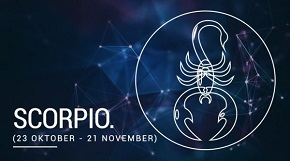
Scorpio 24 Oktober - 22 November
SCORPIO
Scorpio 24 Oktober - 22 November 2018
CINTA & NAFSU
Ketika Uranus bergerak melalui zona hubungan Anda dari bulan Mei sampai November, kehidupan cinta Anda tidak dapat diprediksi. Untuk beberapa Scorpio terlampir - hubungan yang telah kehilangan percikannya tiba-tiba bisa dinyalakan kembali. Bagi orang lain - sebuah kemitraan yang sebelumnya bahagia tiba-tiba bisa menghadapi masalah. Single - jika Anda puas dengan cinta dangkal dan terbaik kedua, maka Anda menjual diri Anda singkat. Miliki kepercayaan (dan kesabaran) untuk menunggu orang yang tepat untuk ikut. Mei dan Desember adalah bulan terbaik untuk mencari cinta, dan Anda akan lebih beruntung jika melompat keluar dari zona nyaman dan membuang jaring lebar Anda.
UANG & NASIB
Untung ada di pihak Anda pada tahun 2018 saat Jupiter (planet kemakmuran) melompat melalui zona pribadi dan uang Anda, meningkatkan ketajaman bisnis Anda dan meningkatkan kemampuan Anda untuk menghasilkan pendapatan tambahan. Masalah uang mungkin macet (atau bahkan mundur) saat Venus membalikkan tanda tangan Anda di bulan Oktober. Tapi - jika Anda telah merencanakan dengan hati-hati dan menghemat dengan bijak - maka Anda akan melewati masalah keuangan sementara ini dan mengakhiri tahun ini dalam bentuk fiskal yang baik.
GAYA HIDUP
Tidak suka sesuatu tentang dirimu sendiri? Jupiter melompat melalui tanda Anda sampai 8 November, memberi Anda “chutzpah” atau kekerenen untuk memulai perubahan pribadi dan kemudian menguasai dunia. Manfaatkan ombak energi yang kuat ini, yang hanya akan terjadi setiap 12 tahun sekali. Jadi, ini pasti waktu untuk menjadi Scorpio terbaik dan paling berani yang bisa Anda lakukan, karena Anda mengatasi tantangan dan menjelajah ke area baru yang menarik yang biasanya akan membuat Anda bingung. Keyakinan ada bahan bakar roket yang akan membawa Anda ke tempat pada tahun 2018!
ORANG SCORPIO TERKENAL
Katy Perry, Pinkan Mambo, Nabila Syakieb.
MOTTO TAHUN BARU
"Jika Anda menunjukkan diri Anda dengan percaya diri, Anda bisa melakukan banyak hal." (Katy Perry)
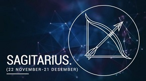
Sagitarius 23 November - 22 Desember
SAGITARIUS
Sagitarius 23 November - 22 Desember 2018
CINTA & NAFSU
Hubungannya mantap saat ia masuk tahun 2018. Yang bisa menjadi masalah bagi para pencandu adrenalin yang kecanduan. Jika Anda terikat, lakukan semua yang Anda bisa untuk memulai lagi hubungan basi atau memperbaiki masalah yang membuat frustrasi. Jika Anda membiarkan kebosanan dan kepuasan untuk diatur, maka tidak akan lama sebelum Anda menuju ke luar pintu. Single - dengan Venus berlari melalui zona percintaan Anda (pada bulan Maret dan Mei) Anda akan berada di sulap Anda terbaik saat Anda menarik pengagum seperti ngengat ke api. Jadi, inilah saat yang tepat untuk bergabung dengan situs kencan online atau memperbarui profil Anda saat ini.
UANG & NASIB
Intuisi dan keberuntungan dihubungkan pada tahun 2018, karena suara batin Anda menuntun Anda ke arah yang benar. Tapi apakah Anda sudah ruam dengan uang tunai? Masalah uang menjadi sorotan di bulan Agustus, ketika Mars secara mundur membawa masalah keuangan ke sebuah kepala. Waktunya berhenti mengeluarkan terlalu banyak uang; belajar dari kesalahanmu; merumuskan rencana fiskal yang baru; dan kemudian melanjutkan. November 2018 sampai Desember 2019 sangat beruntung bagi orang Sagitarius, saat Jupiter bergerak melalui pertanda Anda - untuk pertama kalinya dalam 12 tahun.
GAYA HIDUP
Berusahalah untuk menyeimbangkan waktu solo yang tenang dengan petualangan seru. Kegiatan seperti meditasi, kontemplasi, yoga dan penjurnalan disukai hingga 8 November, saat Jupiter melakukan perjalanan melalui zona rohani Anda dan Anda memanfaatkan kebijaksanaan di dalamnya. Anda sedang dalam susuana hati untuk setidaknya satu perjalanan bisnis atau liburan surgawi di tahun 2018, ketika empat gerhana menyalakan gen gipsi Anda. Tapi mengharapkan keterlambatan transportasi atau perubahan jadwal pada bulan Juni, Juli atau Agustus, ketika Merkurius dan Mars membalikkan zona perjalanan Anda.
ORANG SAGITTARIUS TERKENAL
Mark Twain, Taylor Swift, Dewi Perssik.
MOTTO TAHUN BARU
"Berlari jauh dari pelabuhan yang aman. Tangkap angin perdagangan di layar Anda. Jelajahi. Mimpi. Temukan." (Mark Twain)
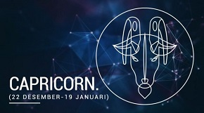
Capricorn 23 Desember - 20 Januari
CAPICORN
Capricorn 23 Desember - 20 Januari 2018
CINTA & NAFSU
Jaga agar proyek profesional dan hasrat penuh hasrat terpisah pada tahun 2018. Dengan Venus yang membalikkan melalui zona karir Anda, cinta dan pekerjaan ada campuran yang berantakan dan romansa di pekerjaan akan berjuang untuk bertahan hidup. Mei dan Juni merupakan bulan penting bagi para lajang, kapan akan ada sejumlah besar calon pelamar dan - untuk beberapa orang Capricorn yang beruntung - saat itulah Cupid akhirnya datang untuk menelepon. Jika Anda terikat, jadilah proaktif dalam memecahkan masalah kemitraan sekitar saat Gerhana Matahari pada tanggal 13 Juli, saat Anda memimpin dan menetapkan peraturan dasar baru dalam hubungan tersebut.
UANG & NASIB
Internet dan keberuntungan terkait pada tahun 2018. Januari sampai Oktober ada periode ketika karir dan/atau profil publik Anda tiba-tiba lepas landas melalui penggunaan media sosial yang cerdik (dan bantuan dari Jupiter). Sebuah posting blog, video atau podcast bisa menjangkau khalayak yang lebih luas atau bahkan menjadi viral. Seorang Capricorn yang pintar dengan keuangan akan menemukan banyak cara untuk menghasilkan peluang keberuntungan saat mereka datang. Bulan Januari dan April adalah bulan yang sangat kebetulan untuk meluncurkan proyek pribadi yang ambisius atau usaha kelompok yang menarik.
GAYA HIDUP
Pada 2018 (karena Jupiter, Neptunus dan Pluto) kekuatan kelompok ada di pihak Anda dan Anda akan diberi kesempatan untuk mengubah hidup Anda dengan cara yang positif. Jadi, pastikan Anda bergabung dengan orang-orang yang menginspirasi yang menghargai visi Anda, meningkatkan ambisi Anda, dan mendorong impian Anda. Tapi pelan-pelan dan kecepatan diri Anda pada bulan Agustus, ketika Mars (planet energi dan motivasi) membalikkan melalui tanda Anda dan motivasi biasa Anda hilang!
ORANG CAPRICORN TERKENAL
Dolly Parton, Muhammad Ali, Agnesia Wayong.
MOTTO TAHUN BARU
“Jika Anda tidak menyukai jalan yang Anda jalani, mulailah membuka yang lain." (Dolly Parton)